Снаряжение исправное и чистое, по договору
Иркутск
Центр проката снаряжения для любых приключений!
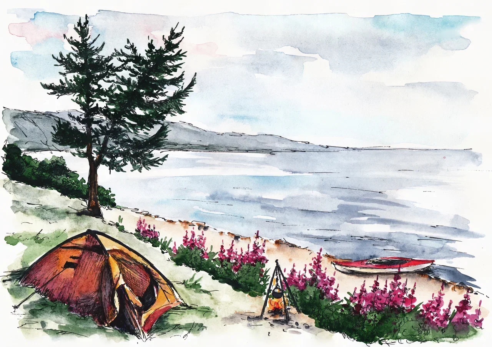
Почему нам доверяют путешественники
Скидки при длительной аренде
Без залога — ни денег, ни документов
Более 2000 единиц снаряжения на выбор
Гибкие условия аренды
консультации по маршрутам и безопасности
Снаряжение для всех случаев
Треккинг
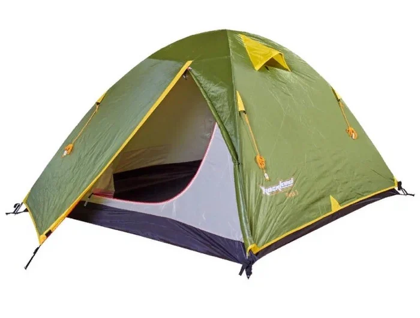
Палатки треккинговые
Легкие и компактные палатки на 2−4 человека, идеально подходящие для походов. Они обеспечивают надежную защиту от погодных условий и быстро устанавливаются.
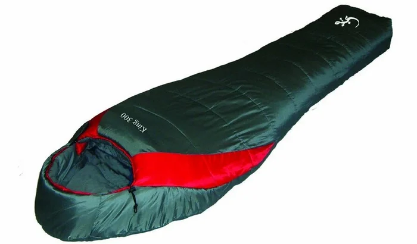
Спальные мешки с вкладышами
В Центре проката снаряжения большой выбор спальников. Все выдаются с вкладышами, остегиваются, подходят для поездок.
Забронировать
Коврики
Туристические коврики (карематы) из пенополиуретана. Разных цветов в ассортименте. Легкие коврики, изолирующие от холода во время отдыха или ночевки на природе.
Забронировать
Сиденья туристические
Сидушка термоизоляционная (или же хоба, подштучник, туристическая сидушка) — отличное решение в походах, в любом месте и в любое время можно присесть отдохнуть, не рискуя собственным здоровьем!
Забронировать
Газовое оборудование
В Центре проката снаряжения большой выбор газового оборудования — горелок, ламп, плит. Горелки — все со шлангами, мощность порядка 3000Вт.
Забронировать
Костровое оборудование
В Центре проката снаряжения большой выбор кострового оборудования — мангалы, таганы-треноги, коптильни, трос-таганы, топоры, пилы, наборы для розжига.
Забронировать
Посуда
Легкая и прочная посуда, специально разработанная для походов и отдыха на природе.
Забронировать
Электрооборудование
Портативные зарядные устройства, которые обеспечивают электроэнергию в походе.
Забронировать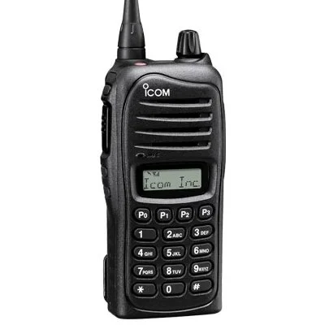
Связь
На тропе стоит обеспечить группу связью — выдать радиостанции первому и последнему участнику похода.
ЗабронироватьПалки треккинговые
Позволяют разгрузить плечевой пояс на горизонтальных участках пути, а на крутых участках служат дополнительной точкой опоры.
Забронировать
Снегоступы
Простые, удобные, функциональные. Подойдут для походов в Саяны и на Хамар-Дабан, а также просто для прогулок в лесу.
Забронировать
Ледоступы
Ледоступы — антискользящие насадки на обувь для облегчения перемещения по скользким поверхностям.
Забронировать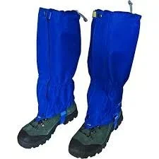
Гамаши
Этот элемент экипировки защитит вашу обувь от попадания снега, дождя, грязи, мелких камешков в зазор между ботинками и штанами.
Забронировать
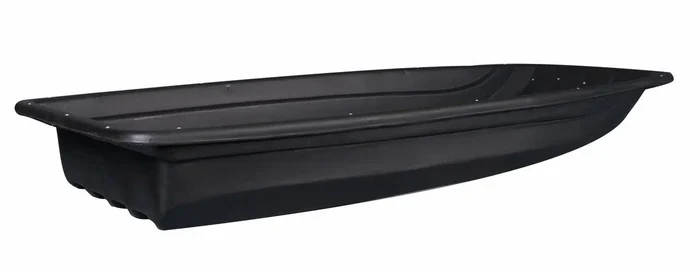
Волокуши
Универсальные устойчивые сани-волокуши отлично подойдут для лыжных походов, ледовых переходов пешком / на коньках по Байкалу, или же зимней ходовой рыбалки.
Забронировать

Гермоупаковка
Водонепроницаемые чехлы для раций, драйбеги (гермомешки) разных объемов. Драйбег полностью герметичен.
Забронировать
Кемпинг
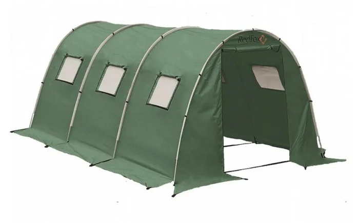
Шатры
Вместимость кемпингового шатра до 24 человек. Кроме того, шатры можно состыковать — тогда с комфортом можно разместить порядка 50 человек.
ЗабронироватьПалатка автомобильная
Надежно защищает от непогоды. Подходит для 2−3 человек, в некоторых случаях можно разместиться вчетвером.
Забронировать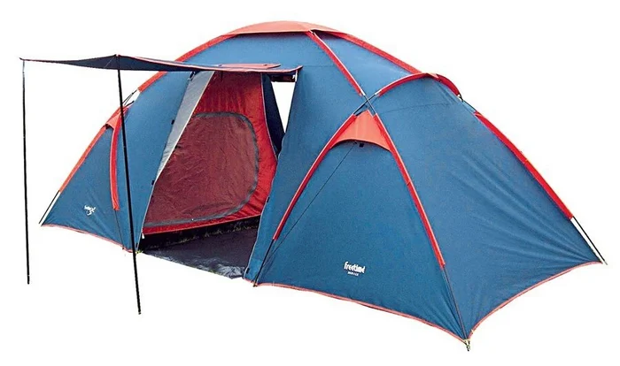
Палатки кемпинговые
Кемпинговые палатки на 4−6 человек идеально подходят для семейного отдыха на природе.
Забронировать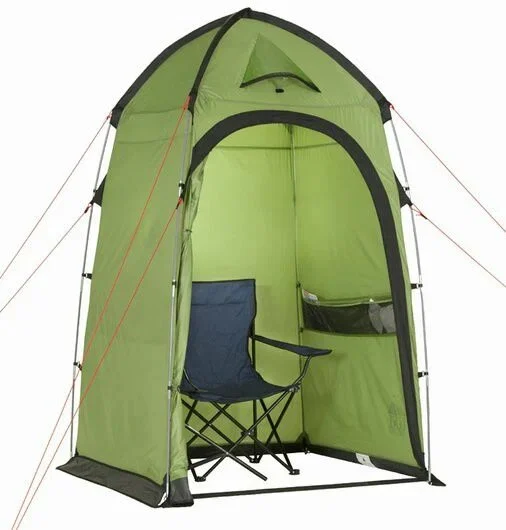
Палатки санитарные
Санитарные палатки можно использовать для устройства душа, туалета или склада.
Забронировать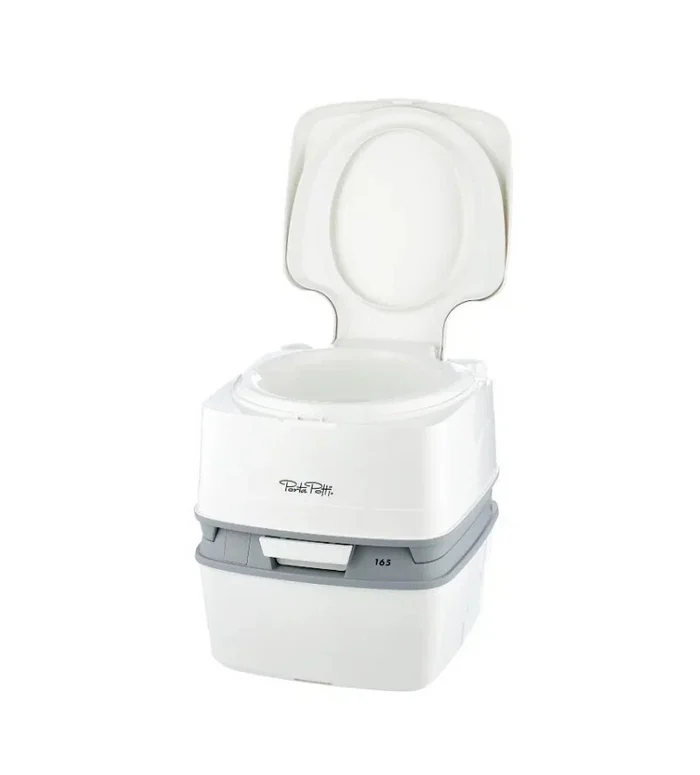
Биотуалеты
В Центре проката снаряжения вы найдете широкий ассортимент всего необходимого для выезда на природу, включая мобильные туалеты
Забронировать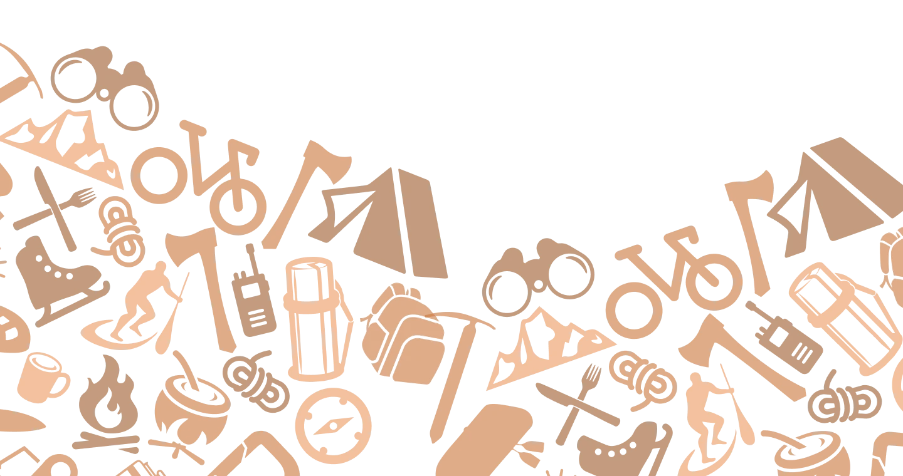

Душ
Компактный душ с погружным насосом выручит вас в полевых условиях. Он не займет много места и не потребует дополнительных источников энергии.
Забронировать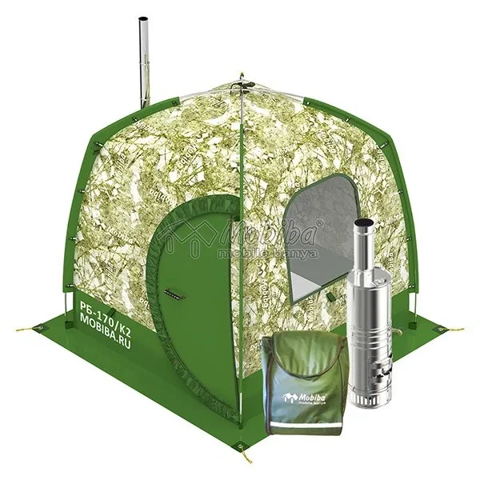
Бани
В Центре проката снаряжения у нас есть несколько модификаций мобильных бань – есть совсем маленькая, ранцевая, есть вариант чуть побольше, а есть улучшенный или VIP-вариант.
Забронировать
Кровати кемпинговые
Для тех, кто любит проводить время на природе, но не хочет жертвовать комфортом и удобствами.
Забронировать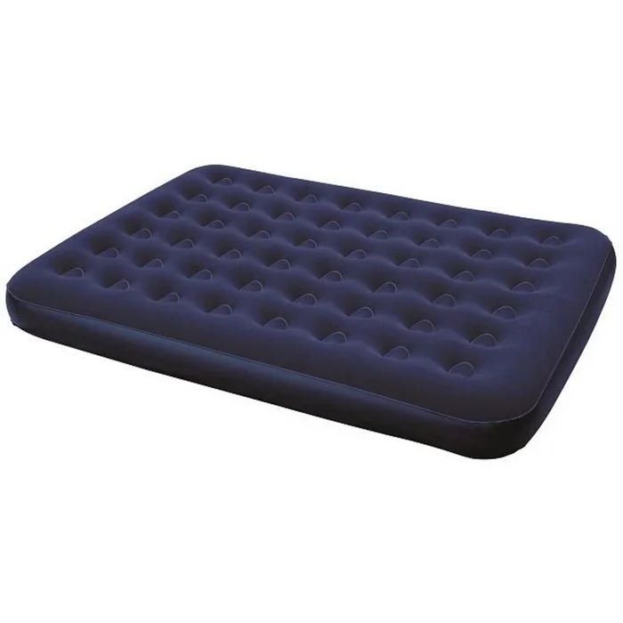
Матрасы
Для тех, кто привык ночевать на природе с комфортом — матрасы для раскладушек, надувные матрасы.
Забронировать
Текстиль
Постельное белье, пледы, полотенца, скатерти, банные халаты — все необходимое для максимально комфортного отдыха на природе.
Забронировать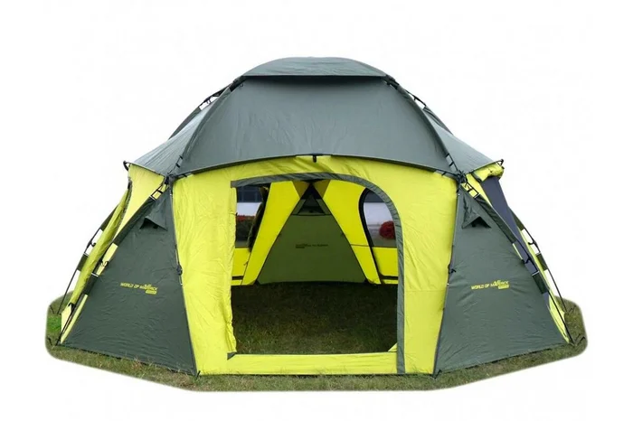
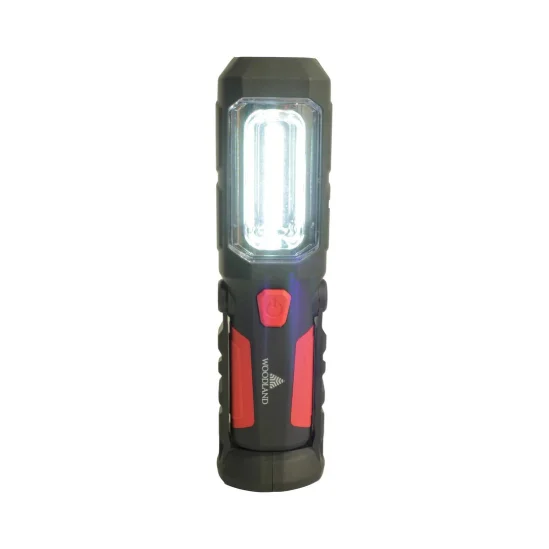
Освещение кемпинговое
Портативные лампы, фонари, гирлянды, обеспечивающие освещение в темное время суток.
Забронировать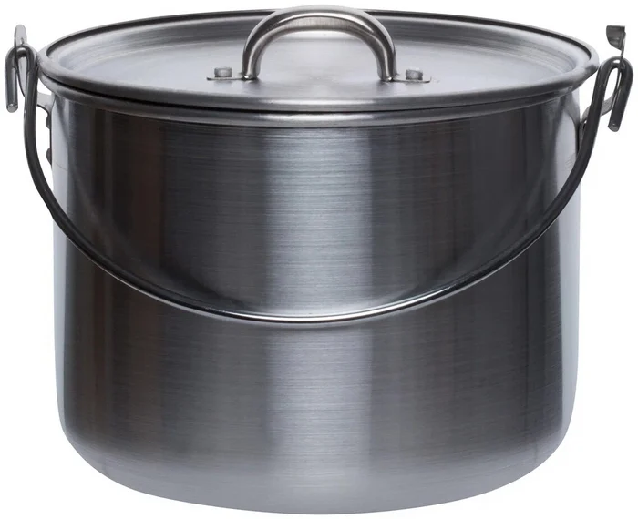
Посуда
Легкая и прочная посуда, специально разработанная для походов и отдыха на природе
Забронировать

Бензопилы
Инструменты для распилки древесины, необходимые для организации костровища или строительства укрытий.
ЗабронироватьЭлектрооборудование
Портативные зарядные устройства, которые обеспечивают электроэнергию в походе.
Забронировать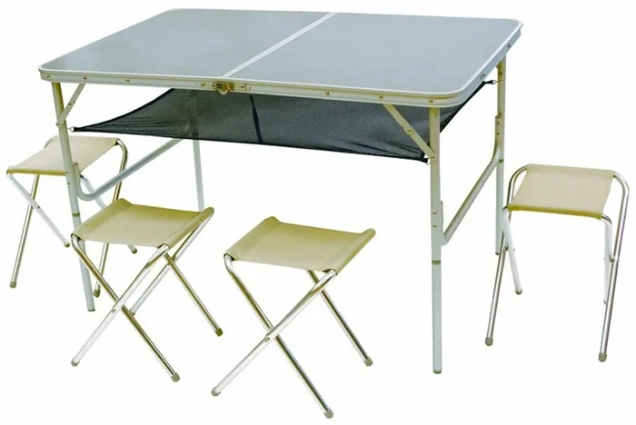
Мебель кемпинговая
Складная мебель, включая столы, стулья и шкафы, которая удобно транспортируется и устанавливается.
Забронировать
Горы
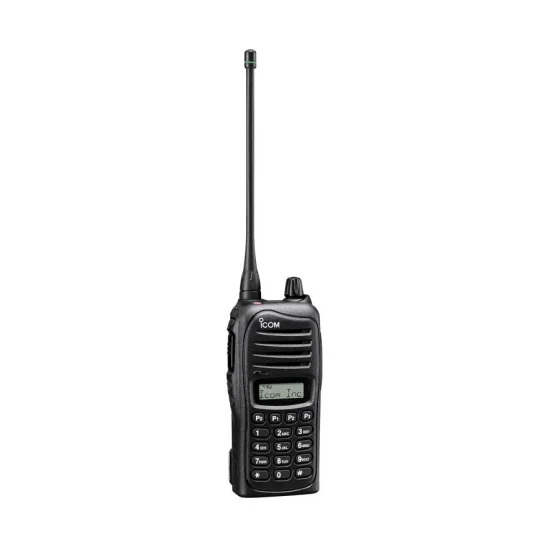
Рации
На тропе стоит обеспечить группу связью — выдать радиостанции первому и последнему участнику похода.
Забронировать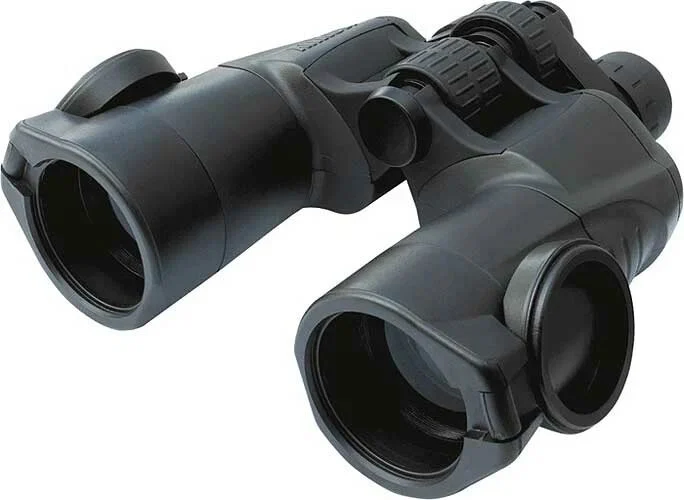
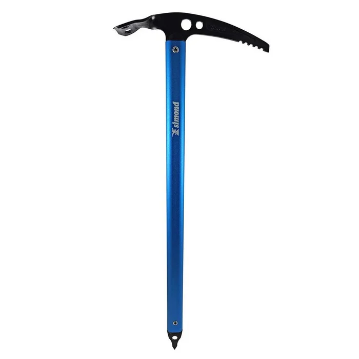
Ледорубы
Ледорубы разной длины с защитой, укомплектованы темляками с резинкой, что очень удобно и в горах, и на ледодроме.
Забронировать
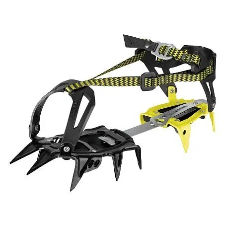
Железо
Карабины, спусковины, жюмары, френды, крючья, ледобуры и другое оборудование, необходимое для восхождений.
Забронировать
Ледоступы
Ледоступы — антискользящие насадки на обувь для облегчения перемещения по скользким поверхностям.
ЗабронироватьСигнальные средства
Фальшфейер, сигнал охотника, патроны Гром и Цвет (для сигнала охотника).
Забронировать
Газовое оборудование
В Центре проката снаряжения большой выбор газового оборудования — горелок, ламп, плит. Горелки — все со шлангами, мощность порядка 3000Вт.
Забронировать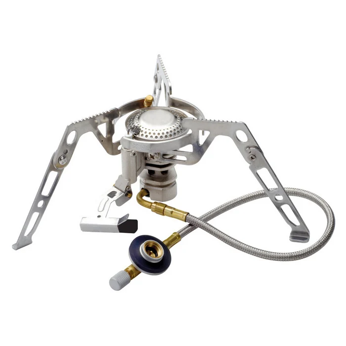
Фонари
Портативные источники света, включая налобные фонари, необходимые для ночных перемещений или лагерей.
Забронировать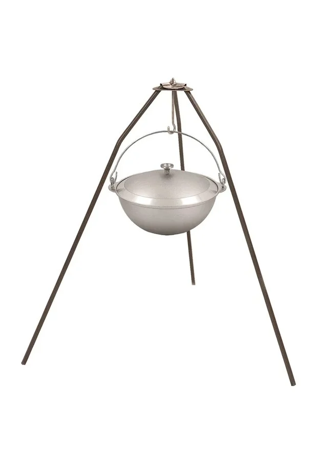
Костровое оборудование
В Центре проката снаряжения большой выбор кострового оборудования — мангалы, таганы-треноги, коптильни, трос-таганы, топоры, пилы, наборы для розжига.
Забронировать
Посуда
Легкая и прочная посуда, специально разработанная для походов и отдыха на природе.
Забронировать
Электрооборудование
Портативные зарядные устройства, которые обеспечивают электроэнергию в походе.
Забронировать

Палки треккинговые
Позволяют разгрузить плечевой пояс на горизонтальных участках пути, а на крутых участках служат дополнительной точкой опоры.
Забронировать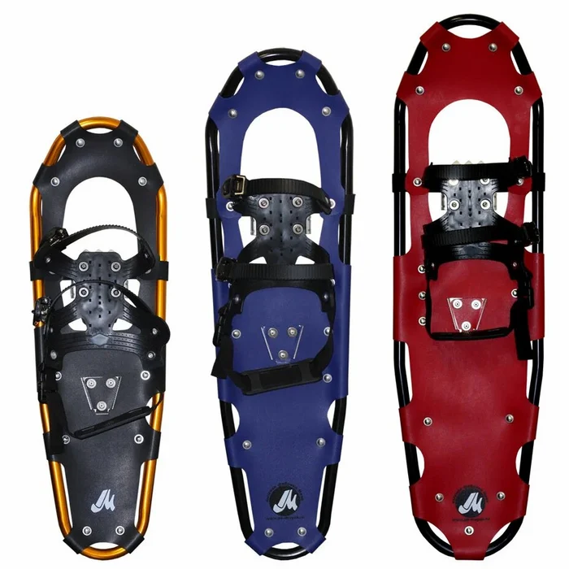
Снегоступы
Простые, удобные, функциональные. Подойдут для походов в Саяны и на Хамар-Дабан, а также просто для прогулок в лесу.
Забронировать
Гамаши
Этот элемент экипировки защитит вашу обувь от попадания снега, дождя, грязи, мелких камешков в зазор между ботинками и штанами.
Забронировать
Спальные мешки с вкладышами
В Центре проката снаряжения большой выбор спальников. Все выдаются с вкладышами, остегиваются, подходят для поездок.
Забронировать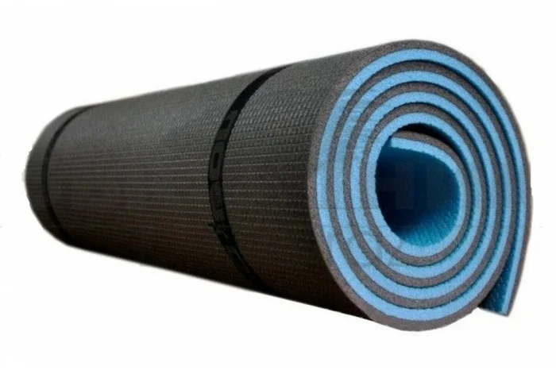
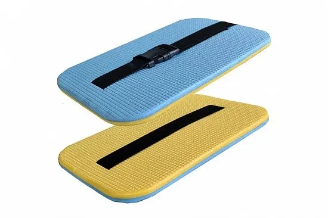
Сиденья туристические
Сидушка термоизоляционная (или же хоба, подштучник, туристическая сидушка)
ЗабронироватьВода

Рафты
Рафты подойдут как для походов выходного дня с детьми по спокойной воде, так и для спортивных сплавов по горным рекам с препятствиями до 5 категории сложности.
Забронировать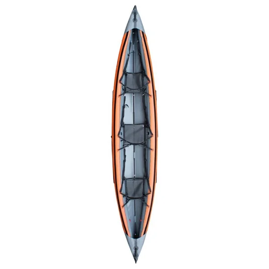
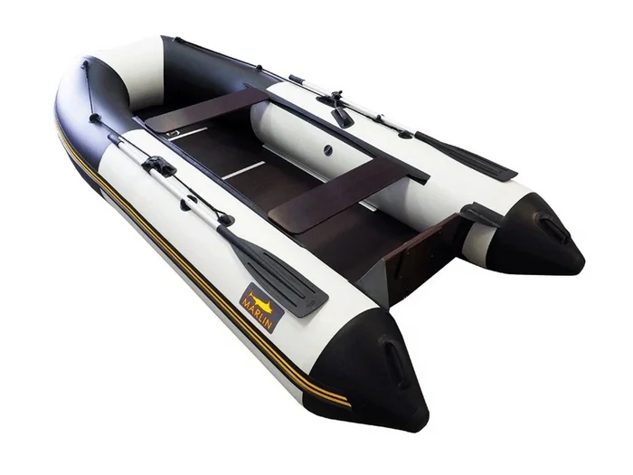
Лодки
Надувная гребная лодка идеальное и простое решение для рыбалки или прогулки по реке
Забронировать
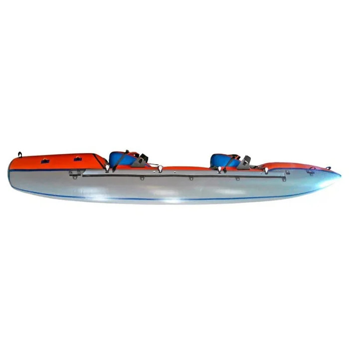
Катамараны
Белрафт 4 Т — четырёхместный спортивно-туристский катамаран с отличной маневренностью и хорошими ходовыми характеристиками
Забронировать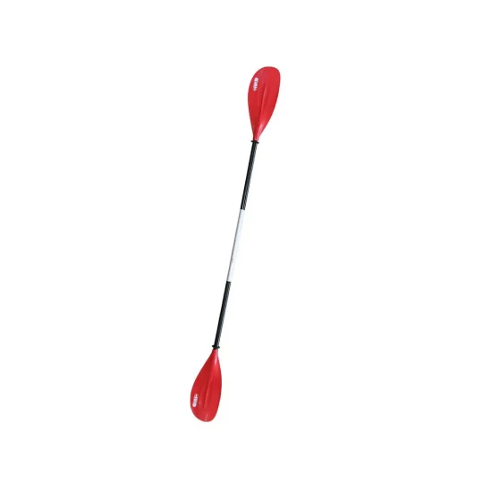
Весла
Весла для рафтов, байдарок, сапбордов. Легкие и прочные весла, обеспечивают хорошую маневренность на воде.
Забронировать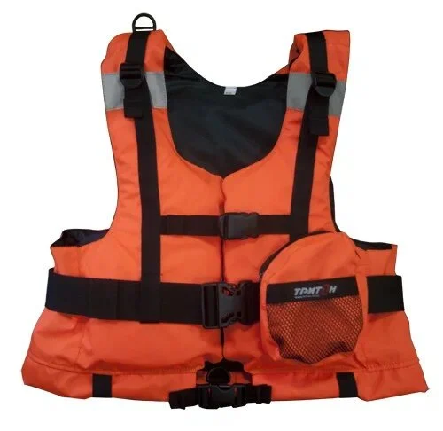
Жилеты спасательные
Наполнитель — пена, наилучший материал для поддержки человека в воде
Забронировать
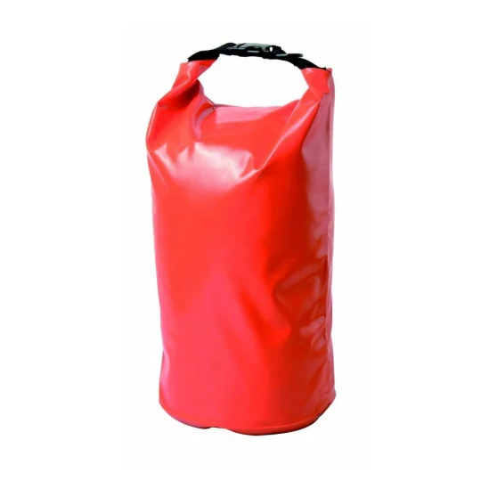
Гермоупаковки
Водонепроницаемые чехлы для раций, драйбеги (гермомешки) разных объемов. Драйбег полностью герметичен.
Забронировать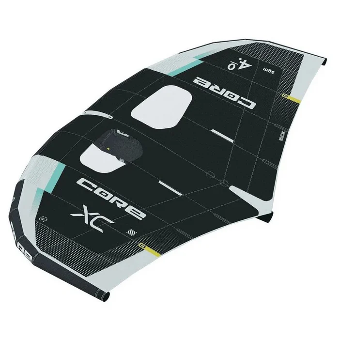
Винги
Винг — это надувное крыло, с которым райдер может двигаться за счет силы ветра. Добавляет элемент скорости и адреналина к активному отдыху.
Забронировать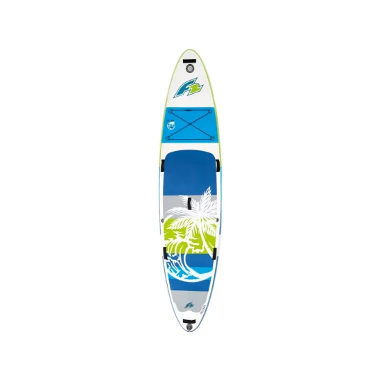
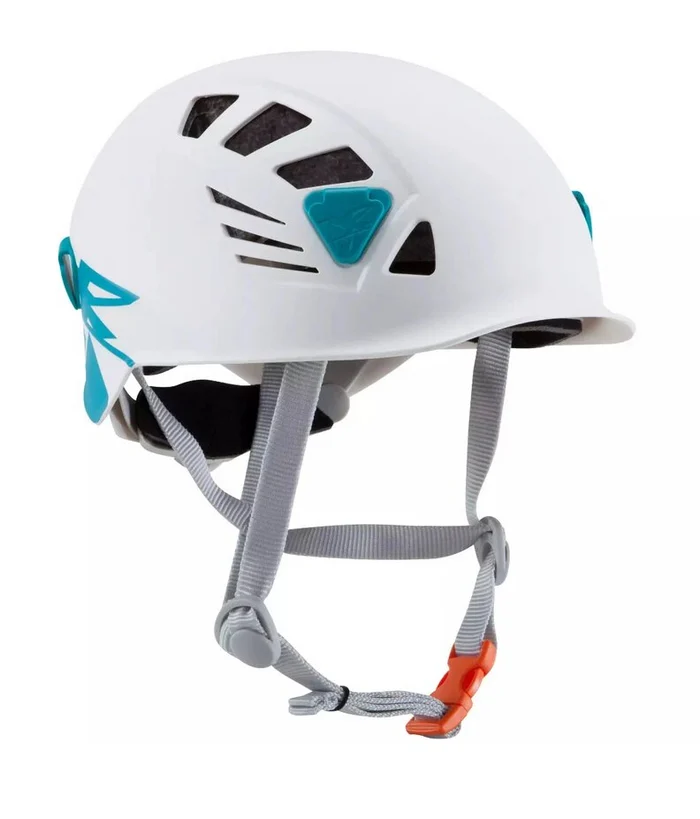
Страховочные концы
Спасательный конец (морковка), предназначен для страховки и проведения спасательных работ на воде.
Забронировать
Лед байкала

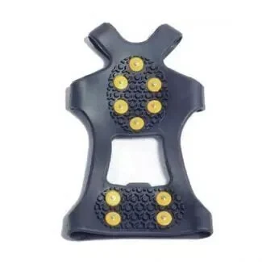
Ледоступы
Ледоступы — антискользящие насадки на обувь для облегчения перемещения по скользким поверхностям.
Забронировать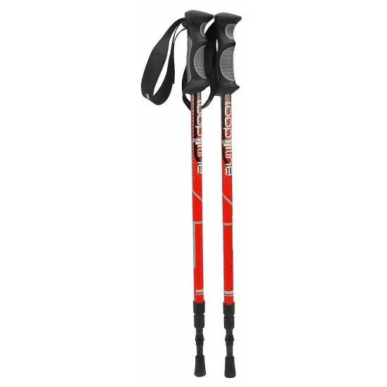
Палки треккинговые
Позволяют разгрузить плечевой пояс на горизонтальных участках пути, а на крутых участках служат дополнительной точкой опоры.
Забронировать

Поцелуй Байкала
В наборе все необходимое для подготовки, включая экологичные бумажные трубочки и всё для уборки мусора со льда.
Забронировать
Волокуши
Универсальные устойчивые сани-волокуши отлично подойдут для лыжных походов, ледовых переходов пешком / на коньках по Байкалу, или же зимней ходовой рыбалки.
ЗабронироватьСанки
Традиционное средство передвижения по снегу; они отлично подходят как детям, так и взрослым для веселого времяпрепровождения зимой.
Забронировать
Винги
Винг — это надувное крыло, с которым райдер может двигаться за счет силы ветра. Добавляет элемент скорости и адреналина к активному отдыху.
Забронировать
Клюшки и шайбы
Инвентарь для игры в хоккей; они позволяют весело провести время на льду вместе с друзьями.
ЗабронироватьРазвлечения и активности
Громкоговорители
ЗабронироватьГирлянды батареечные
ЗабронироватьПлатформы плавающие
ЗабронироватьМячи
ЗабронироватьБадминтон
ЗабронироватьДартс
ЗабронироватьВоздушный змей
ЗабронироватьОптика
ЗабронироватьИгры настольные
ЗабронироватьФрисби
ЗабронироватьГамаки
ЗабронироватьБрызгалки
ЗабронироватьРыболовные принадлежности
ЗабронироватьФинские сани
ЗабронироватьКоньки
ЗабронироватьВинг
ЗабронироватьВатрушки
ЗабронироватьКлюшки и шайбы
ЗабронироватьФлипчарт с принадлежностями
ЗабронироватьПалатка автомобильная
ЗабронироватьРазное
Аптечки
ЗабронироватьИнструменты разные
ЗабронироватьРемнабор универсальный
ЗабронироватьЭлектрическое оборудование
ЗабронироватьЧехлы и тара
ЗабронироватьРасходники в ассортименте
ЗабронироватьКанистры (для воды и ГСМ)
ЗабронироватьКорзины для мусора
ЗабронироватьТекстиль
ЗабронироватьМы сотрудничаем для всех и со всеми
Мы сами — активные путешественники уже более 30 лет , используем проверенные бренды, следим за качеством и сохранностью экипировки.
Активные путешественники
Самостоятельные походы, отдых на природе.
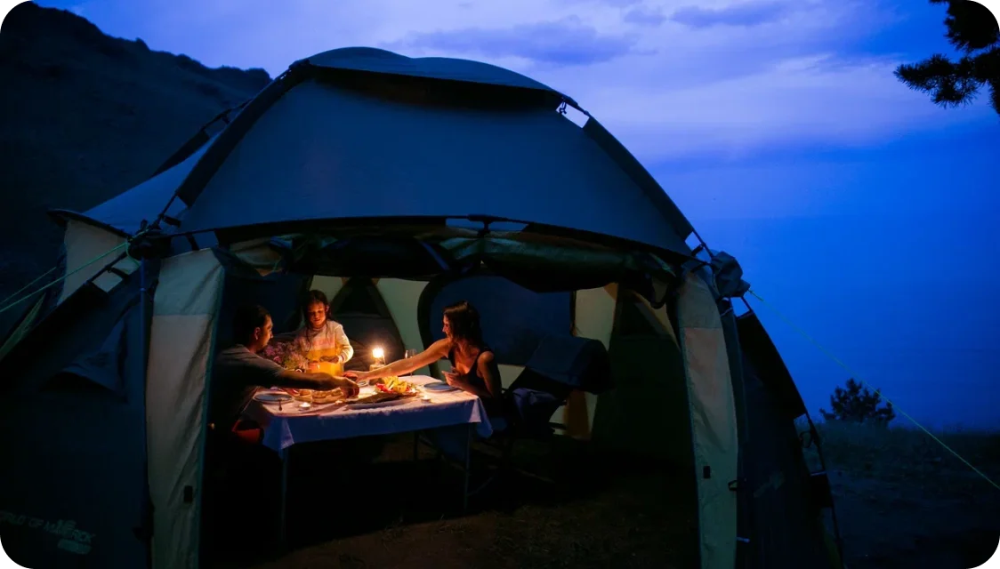
Корпоративные клиенты
Мероприятия, командные выезды.
Туроператоры
Оборудование для групп туристов.
Профессионалы
Съемочные группы, участники соревнований и фестивалей
Прокат снаряжения в 3 шага
Выберите нужное оборудование и забронируйте через отправку заявки
Получите обратную связь с подтверждением, и заберите снаряжение
Наслаждайтесь приключением
Отзывы наших клиентов
Среди всех организаций проката оказалось самой хорошей, все то что нужно, было в наличии, по времени проката так же пошли навстречу, вообщем все великолепно
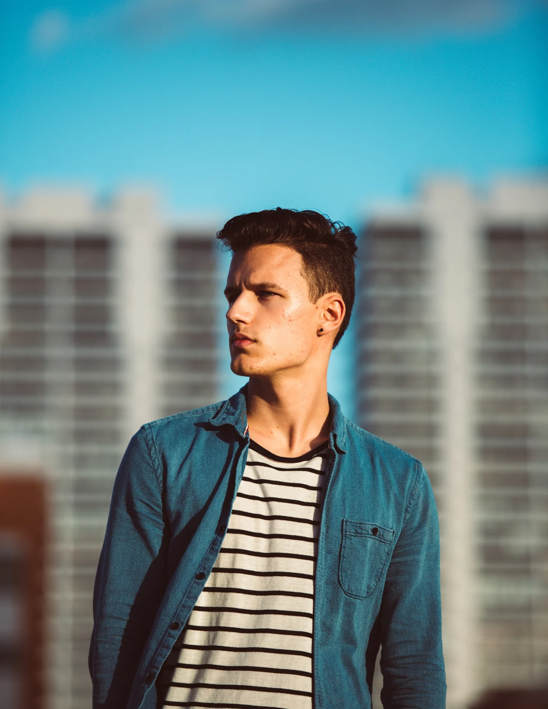
Лучшие!! Третий год беру сапы, палатки, стулья, столы и баню. Всегда все целое, чистое, в наличии. Цены приятные, организация на уровне! Так держать 🤟
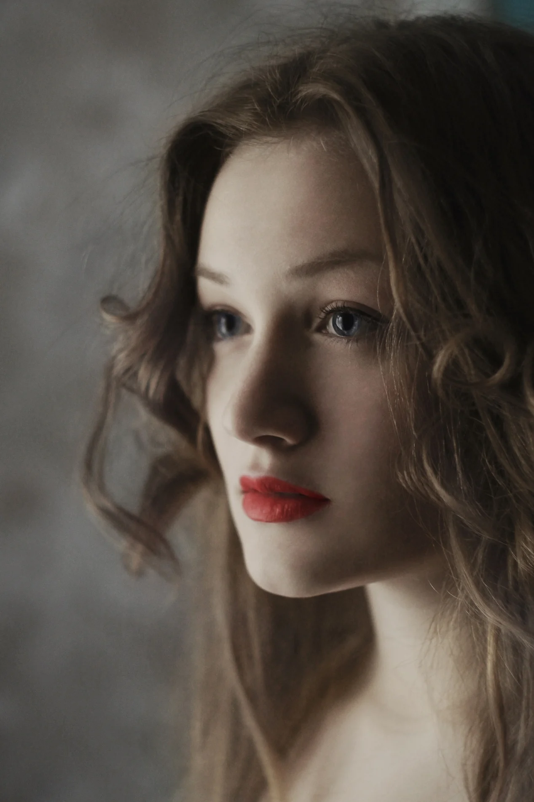
От души рекомендую данный прокат. В наличие хорошее снаряжение, очень приятные люди ведут переписку, все подсказали, даже посоветовали куда лучше ехать, где какие дороги ❤️
Отличный сервис, классные ребята, которые открыли и ведут это бизнес все очень понравилось! Так держать! Будем советовать друзьям!
Контакты
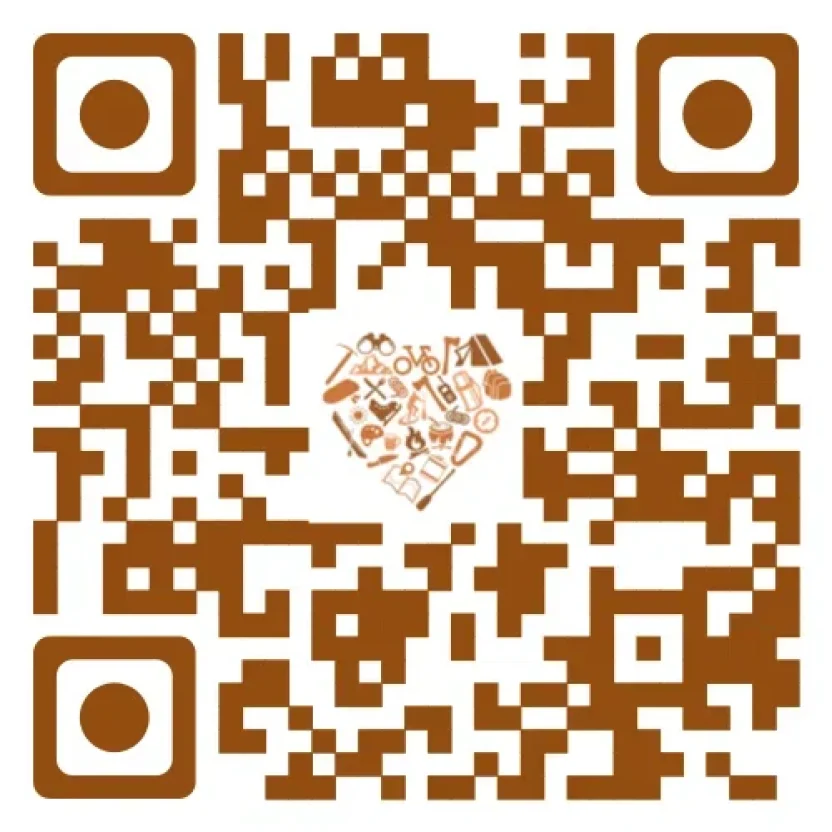